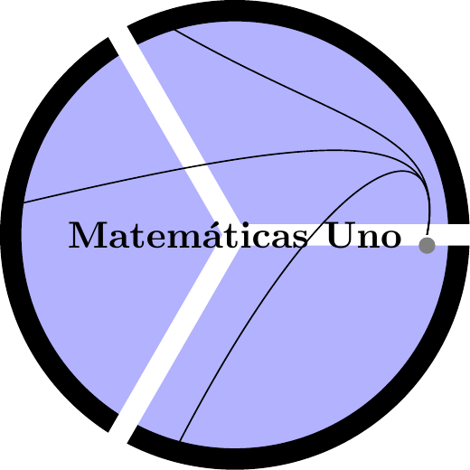

Curso básico de Matemáticas Uno
2026-04-30
Capítulo 1 Prerrequisitos
Podcast explicativo
El curso de matemáticas uno sólo tiene los siguientes prerrequisitios

1.1 Comportamentales
Tener disposición para hacer silencio y generar un buen ambiente de escucha en el aula de clase.
Tener la capacidad de acatar sugerencias para mejorar las técnicas de estudio ya adquiridas en procesos educativos pasados.
Saber tomar nota mientras el profesor explica los temas de ese día.
Repasar las notas de clase y complementar con la lectura del texto guía según se avanza en el desarrollo temático del curso.
1.2 Evaluativos
Tener los implementos básicos para una evaluación:
Lapicero.
Lapiz.
Borrador.
Calculadora.
Todos los celulares apagados.
Ir al baño antes de iniciar la evalualción.
No hay preguntas en el desarrollo de la evaluación.
Todas la maletas deben estar adelante.
1.3 Fechas de evaluación Grupo A
Evaluación de entrada Virtual (10 \(\%\)) - Fecha: Lunes \(07\) de Febrero
Primer parcial Presencial (17.5 \(\%\)) - Fecha: Viernes \(25\) de Febrero
Segundo Parcial Virtual (17.5 \(\%\)) - Fecha: Viernes \(25\) de Marzo
Tercer Parcial Presencial (17.5 \(\%\)) - Fecha: Viernes \(29\) de Abril
Fin de clases 29 de Mayo
Cuarto Parcial Virtual (ó Parcial Final) (17.5 \(\%\)) - Fecha: Viernes \(03\) de Junio
1.4 Fechas de evaluación Grupo B
Evaluación de entrada Virtual (10 \(\%\)) - Fecha: Lunes \(07\) de Febrero
Primer parcial Presencial (17.5 \(\%\)) - Fecha: Jueves \(24\) de Febrero
Segundo Parcial Virtual (17.5 \(\%\)) - Fecha: Jueves \(24\) de Marzo
Tercer Parcial Presencial (17.5 \(\%\)) - Fecha: Jueves \(28\) de Abril
Fin de clases 29 de Mayo
Cuarto Parcial Virtual (ó Parcial Final) (17.5 \(\%\)) - Fecha: Jueves \(02\) de Junio
1.5 Video motivacional
|
Todos tenemos un matemático interno
|
Así ve el mundo un matemático
|
Las matemáticas son la profesión del futuro
|
|
Neil Degrasse: Enseñar ciencia a los niños
|
Cuando ya no esté: Neil Degrasse
|
Jack Andraka: Ingredientes para innovar
|
|
Dan Kaminski: Siete llaves de seguridad
|
Próximamente
|
Próximamente
|
|
Próximamente
|
Próximamente
|
Próximamente
|


1.6 Página para reforzar conceptos básicos
El siguiente link es una página para repasar conceptos basicos que requieras en tu formación. Página Web
1.7 Matemáticas del planeta tierra
El siguiente link es una página para ver las matemáticas del planeta tierra, como sus conceptos basicos influyen en el aprendizaje continuo y sus implicaciones en nuestro planeta. Página Web